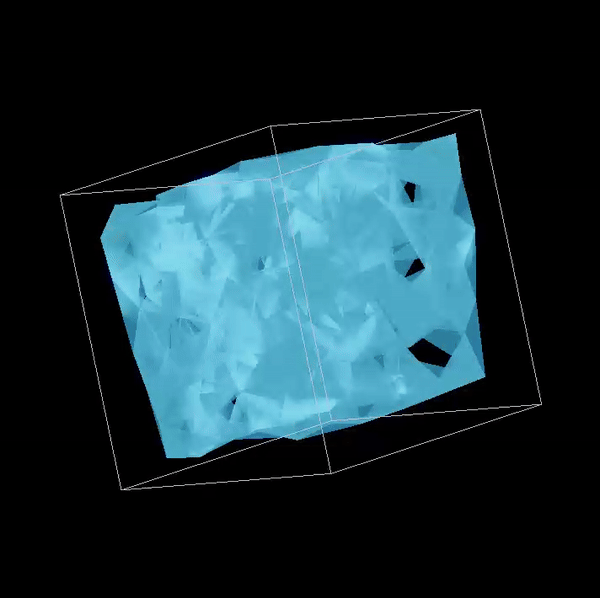

CS184 Summer 2025 Final Project
Waterbender: A Real-Time Interactive Fluid Simulation
Link to webpage: awaldman0.github.io/waterbender_final_report/
Link to GitHub repo: github.com/awaldman0/waterbender
Link to slides
Abstract
This project explores real-time particle-based fluid simulation and rendering in 3D based in OpenGL. Starting from a barebones template project that could render a square to the screen (using GLFW for window management and GLM for math operations), we extended the square into a cube that would house our fluid simulation. From there, we developed a particle system and implemented physical interactions that approximate the behavior of a fluid when a large number of particles are on screen. Next, we transitioned from displaying particle data as distinct points to combining them into a contiguous mesh using the k-Nearest Neighbor method. To enhance the realism of our fluid, we used area weighted vertex normals from the mesh in combination with a bloom shader and multiple passes of a gaussian blur shader (all written in GLSL), finally compositing the layers together in the framebuffer. The final version of our program can be rendered in two modes; the first displays our fluid using the fully shaded mesh, while the second shows the all of the particles that underpin the simulation. The user can switch between display modes by pressing 'P'. Waterbender has a number of other ways for the user interact with the simultion, including being able to use their mouse and/or arrow keys to rotate the cube over the x and y axes while 'R' can be pressed to reset the simulation's orientation. The user can scroll up and down to add or subtract particles from the simulation, respectively. Lastly, the user can dynamically resize the container by pressing Q, W, and E to expand along each axis and A, S, and D to contract.
If you are viewing this as a PDF, please visit the website to see animated GIFs.

Technical Approach
Particle System
Meshing and Shaders
After solving for each particle position at a new timestep based on the physics implemented in the Particle System, we must generate a mesh of triangles to be rendered and shaded. The basic steps of mesh generation are listed below in order:- 1] Smooth Positions: Raw particle positions from the simulation are noisy due to collisions and rapid motion. Before meshing, each stored position is updated via an exponential moving average toward the actual particle position. This attenuates high-frequency jitter and produces a temporally stable surface.
- 2] k Nearest Neighbors: For each vertex candidate, distances to all others are measured and those beyond a fixed radius are discarded. From the remainder, only a limited number of the closest are retained. This constrains connectivity to local regions and limits computational cost.
- 3] Triangle Formation: Triplets are formed by taking the central vertex and all unique unordered neighbor pairs that are also mutually close. Indices are canonicalized and hashed to guarantee each triangle appears only once.
- 4] Compute Normals: For each triangle, the cross product of two edge vectors yields an unnormalized face normal proportional to the triangle’s area. These are summed into the normals of their constituent vertices, then normalized to unit length, producing smooth, area-weighted vertex normals.
- 5] Smooth Normals: To suppress frame-to-frame shading noise from topology changes, normals are updated via an EMA blending current and previous values. A dot product test against a reference light direction enforces consistent hemisphere orientation by flipping inverted normals.
- 6] Pack vertex data: The final per-vertex positions and normals are written in an interleaved format—position components followed by normal components—matching the GPU shader’s attribute layout. This avoids indexed rendering and enables direct sequential fetch by the vertex shader.
- 7] Send to GPU: Bind the mesh’s VAO and its vertex buffer, then uploads the current interleaved vertex data (positions + normals) to the GPU. If the new data is larger than the buffer’s current capacity, it reallocates the buffer with glBufferData; otherwise it just overwrites existing storage with glBufferSubData. Finally, it unbinds the VAO.
Problems Encountered
- Magic Numbers: A large source of difficulty we ran into while developing the physics in our particle system was properly choosing coefficients (ex. the force of gravity, multiplicative constants) that maintained a level of realism/plausibility in our simulation without totally breaking things. Minute changes in particular values could cause particles to clip outside of the bounding box, ignore collisions, or even disappear entirely. Lots of time went into balancing various contants used throughout our code to ensure the stability of our simulation.
- Large-scale Simulations: When simulating a large number of particles (>5000), performance drops off pretty significantly. As a result, our program defaults to 512 particles, although the user can add as many as they please by scrolling their mouse wheel upwards. A major source of this slowdown is collision handling. If we had a bit more time to extend the capabilities of our simulator adding some sort of space partitioning data structure like an octree or BVH would have been beneficial.
Lessons Learned
- An Approximate Solution Is Better Than An Incomplete One: At the outset, we intended to integrate a Navier-Stokes solver as our physics model. As we developed the particle system along with particle-box intersections, it became clear implementing the model we researched would require a substantial overhaul of our existing code. Due to the accelerated timeline of the summer semester in combination with the due date of Homework 3 and our final exam, we simply did not have the time to rework our codebase to include the solver. Unfortunately, this means our simulation does not have a high degree of physical accuracy. Despite that, choosing to move away from an extremely realistic physics model allowed us to spend more time creating a complete experience for the user by giving us time to develop more ways to interact with the simulation in addition to creating more immersive shaders.
Results

|

|

|

|
References
Contributions
Mark MacDermott: Implemented mesh generation and shading from particle data provided by physics simulation
Alexander Waldman: Researched/found starter code, set up the bounding box, implemented core classes, developed much of the particle system, contributed to final writeup and slides
Yuanbo Jiang: Implemented control features to add or remove particles, enabled mouse-based interaction that allows rapid mmodifications to the container, and researched real-time interactive fluid simulation approaches.
Seongsoo Park: Implemented some code such as particle-particle collision and bounding box sizing, and also contributed to some parts of the slides.